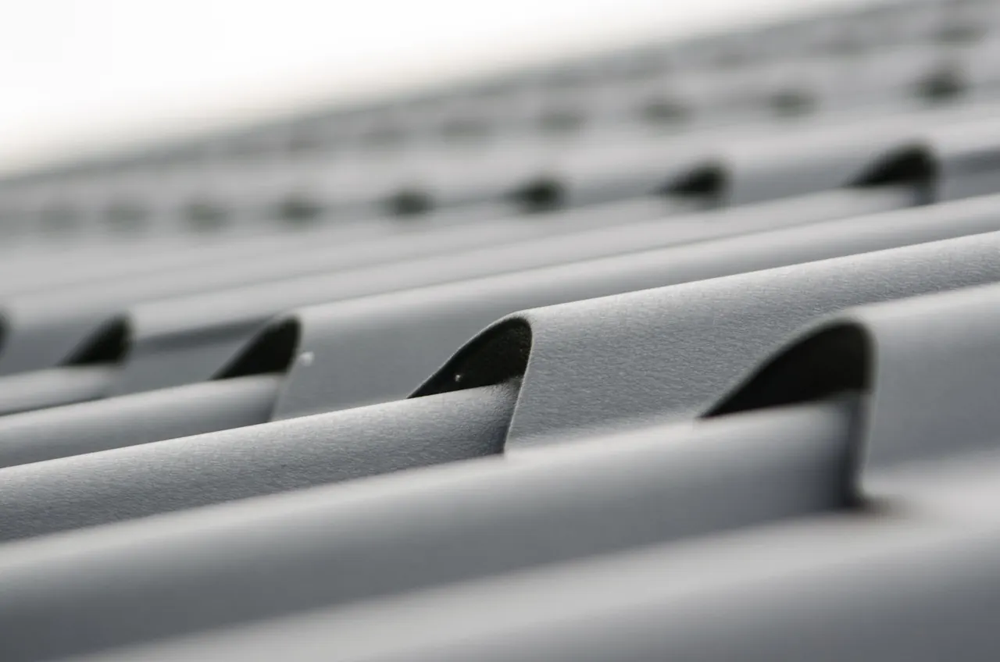
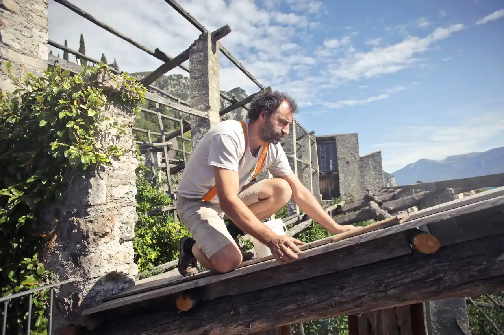

Focused arrival windows
Useful updates and clear arrival timing.

Roofing in St. Andrews is essential for maintaining the integrity of your home or business. Our experienced team provides comprehensive roofing services, including inspections and repairs, ensuring your property remains safe and secure. As a leading roof contractor in St. Andrews, we understand the unique challenges posed by the local climate and building styles.
Useful updates and clear arrival timing.
Review the approach and price before deciding.
Equipped vehicles and respectful cleanup.
Neighbors serving neighbors with follow-through.
Roofing in St. Andrews is a vital service that ensures the safety and longevity of your property. With years of experience serving this beautiful coastal community, Roofing Contractor Florida specializes in roofing solutions tailored to the unique needs of St. Andrews residents. From the historic buildings in St. Andrews Village to the modern homes near St. Andrews State Park, we understand the local architecture and environmental factors that influence roofing choices. Our roof contractor services in St. Andrews encompass everything from routine maintenance to emergency repairs, ensuring your roof stands strong against Florida's coastal weather.

Roofing demand in St. Andrews is driven by the area's unique climate and architectural diversity. Our roof contractor services address everything from new installations to emergency repairs, ensuring that your property is well-protected. We offer 24/7 roofing services in St. Andrews to meet urgent needs.
Our roof installation services in St. Andrews focus on quality materials and expert craftsmanship. We cater to various building types, ensuring your new roof withstands local weather conditions.
View service →02When it's time for a roof replacement in St. Andrews, we provide efficient and reliable services. Our team ensures your new roof meets all local codes and standards.
View service →03Roof repair in St. Andrews is essential for addressing issues like leaks and missing shingles. Our experienced team quickly identifies problems and implements effective solutions.
View service →04Regular roof inspections in St. Andrews help prevent costly repairs. We assess the condition of your roof and provide recommendations tailored to your specific needs.
View service →05Our roof maintenance services in St. Andrews ensure your roof remains in optimal condition. We offer preventative plans to keep your roof protected year-round.
View service →06Flat roofing services in St. Andrews are ideal for commercial properties. We use durable materials to ensure your flat roof withstands the elements.
View service →07Shingle roofing services in St. Andrews are popular for residential properties. We offer a variety of styles and colors to enhance your home's curb appeal.
View service →08Tile roofing services in St. Andrews provide a distinctive look while offering durability. Our team is experienced in installing and repairing tile roofs.
View service →09Metal roofing services in St. Andrews offer longevity and energy efficiency. We install high-quality metal roofs suitable for various structures.
View service →Roofing services in St. Andrews require careful planning and execution due to the area's unique climate and building regulations. Our team stays updated on the Florida Building Code Compliance, ensuring every project meets local standards. We also understand the impact of coastal weather conditions on roofing materials and installation techniques. As a reliable roof contractor in St. Andrews, we provide tailored solutions for each property, considering factors such as ventilation and moisture management. Our commitment to quality ensures that every roof we work on is built to last.
High humidity can lead to mold growth and material deterioration, impacting the lifespan of roofs. We use moisture-resistant materials and ensure proper ventilation to combat humidity-related issues.
Severe storms can cause significant damage, leading to urgent repair needs. Our team is trained in emergency roofing services and can respond quickly to storm damage in St. Andrews.
Different styles require unique roofing solutions, complicating installation and repairs. We assess each property individually, providing customized roofing solutions that respect the architectural integrity of homes.
This code ensures all roofing work meets safety and durability standards, crucial for protecting properties in St. Andrews.
Following these standards guarantees that our roofing installations are performed correctly, minimizing future issues.
St. Andrews experiences unique roofing challenges due to its coastal climate and diverse architectural styles. Here are some common problems faced by homeowners in the area.
The high humidity and frequent rain can lead to roof leaks, especially in older homes with outdated materials. We conduct thorough inspections and use high-quality materials to ensure watertight seals and long-lasting protection.
Extreme heat can cause asphalt shingles to curl, compromising their effectiveness and leading to leaks. We recommend reflective roofing materials that minimize heat absorption and extend the lifespan of your roof.
The humid climate in St. Andrews can promote mold growth, which damages roofing materials and affects indoor air quality. We offer roof cleaning and maintenance services to remove mold and prevent its return, ensuring a healthy environment.
St. Andrews is susceptible to hurricanes, which can cause significant damage to roofs, including missing shingles and structural issues. We provide emergency repairs and resilient roofing options designed to withstand high winds and severe weather.

Roofing pricing in St. Andrews typically ranges from $180 to $450 per square for a new roof installation. Factors such as material choice, roof size, and complexity of the job can influence costs. Homeowners should expect to pay more for premium materials or intricate designs. Our team provides transparent estimates, ensuring you understand the costs involved. We also offer affordable roofing in St. Andrews to accommodate different budgets.
The choice of roofing material significantly impacts pricing. Asphalt shingles are generally more affordable, while metal and tile options can be pricier.
Larger roofs require more materials and labor, increasing overall costs. We provide detailed measurements to give accurate estimates.
Roofs with multiple slopes, chimneys, or skylights may require additional labor and time, affecting the final price.
Navigating St. Andrews is made easier with its well-known landmarks. Our team uses these as reference points for efficient service delivery. We often work near the St. Andrews Marina and St. Andrews Park, which are central to the community.
The marina is a hub for local activity, making it a common area for our roofing projects.
This park is a popular gathering spot, and we often service nearby homes requiring roofing work.
The yacht club attracts many residents, leading to increased demand for quality roofing services in the vicinity.
Many of our roofing projects occur in this historic area, where we ensure compliance with preservation standards.
Businesses in this area often require commercial roofing services, and we are their go-to contractor.
The pier is a landmark that attracts tourists and locals alike, creating a demand for nearby residential roofing services.
This shopping center has various businesses that often require roofing maintenance and repairs.
The district is home to several businesses needing reliable roofing solutions to protect their properties.
Easily accessible from St. Andrews, this highway allows for quick transportation to various job sites.
Located a short drive away, this airport provides convenient access for our team to reach clients quickly.
Our roofing services extend across various neighborhoods in St. Andrews, ensuring that all residents have access to reliable roofing solutions. We cater to the unique needs of each area.
St. Andrews Bay features waterfront homes that require durable roofing solutions to withstand coastal weather. Our team can reach this area within 20 minutes.
Homes near St. Andrews State Park often face challenges from heavy rains and humidity, necessitating quality roofing materials. We can be on-site in about 15 minutes.
St. Andrews Village has a mix of historic and modern homes, each requiring tailored roofing solutions. Our team is familiar with this area and can respond quickly.
This district features older homes that need specialized care and attention during roofing projects. We can typically arrive in under 30 minutes.
Our work in St. Andrews showcases our ability to tackle various roofing challenges effectively. Here are a few case studies that highlight our success.
Severe storm damage to a residential roof We quickly assessed the damage and provided emergency roof repairs, replacing missing shingles and reinforcing the structure. The homeowner was pleased with the swift service and the roof was restored to its original condition within 48 hours.
Mold growth due to poor ventilation We installed a new roof ventilation system, improving airflow and preventing future mold issues. The homeowner reported improved air quality and a significant reduction in humidity levels within weeks.
Aging roof needing replacement We replaced the old roof with durable asphalt shingles that met local building codes. The new roof not only enhanced the home's aesthetics but also increased its energy efficiency, saving the homeowner on utility bills.
The climate in St. Andrews influences roofing needs throughout the year. Understanding seasonal considerations can help homeowners maintain their roofs effectively.
Spring brings heavy rains, which can lead to leaks and water damage if roofs are not properly maintained.
Summer heat can cause roofing materials to expand and contract, leading to wear and tear.
Fall is a great time for roof maintenance as leaves can accumulate and cause blockages in gutters.
Winter storms can bring heavy snow and ice, which may lead to ice dams and roof leaks.
From St. Andrews, we provide roofing services to several nearby cities, ensuring a wide coverage area for our clients.

Just a short drive from St. Andrews, Downtown Panama City is a key service area for our roofing projects.
Local coverage and details
Located just north of St. Andrews, Millville is another community we proudly serve with quality roofing solutions.
Local coverage and details
Downtown North is easily accessible, allowing us to provide timely roofing services to this area.
Local coverage and details
South Panama City is close to St. Andrews, making it convenient for our team to service this area.
Local coverage and detailsChoosing the right roofing contractor can make a significant difference in the quality of your roofing project. Here are some important questions to consider.
Experience with local conditions ensures the contractor understands the challenges specific to St. Andrews roofing.
A licensed and insured contractor protects you from liability in case of accidents during the project.
References offer insight into the contractor's reliability and quality of work, helping you make an informed decision.
Warranties demonstrate the contractor's confidence in their work and provide peace of mind for homeowners.
Understanding how a contractor manages challenges can reveal their problem-solving skills and commitment to customer satisfaction.
Lic. #CFC1421234
Lic. #CGC1512345
GAF
CertainTeed
$2M general liability
Member
Member
The best roofing services in St. Andrews include roof inspections, repairs, and installations tailored to local conditions. Our experienced team ensures quality work that meets Florida's building codes.
Roofing costs in St. Andrews typically range from $180 to $450 per square, depending on materials and roof complexity. We provide transparent estimates to help you budget effectively.
Look for a licensed, insured contractor with local experience and positive customer reviews. They should offer a warranty on their work and be responsive to your questions.
Schedule a roof inspection in St. Andrews at least once a year, especially before hurricane season or after severe weather events to ensure your roof's integrity.
Prevent roof damage by scheduling regular maintenance, keeping gutters clean, and addressing any issues promptly. Our team can help with preventative roof maintenance plans.
Not seeing your question? Our local team can help you understand urgency, scheduling and what to expect.
Ask the local team
We invite you to reach out for any roofing needs. Our team is available to assist you promptly, ensuring a quick response.